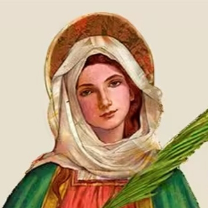
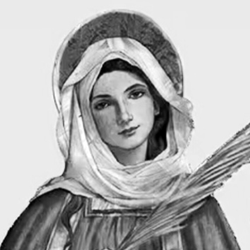

Criado para simplificar e ajudar na interação da Igreja Santa Apolônia com a comunidade.

Santa Apolônia foi uma mártir cristã do século III, conhecida por sua devoção e coragem durante a perseguição aos cristãos em Alexandria, no Egito, por volta de 249 d.C. Capturada, teve seus dentes quebrados e arrancados por um grupo de pagãos. Em seguida, foi ameaçada de ser queimada viva. Pedindo um instante de liberdade, lançou-se às chamas por vontade própria, morrendo como testemunho de sua fé. Atualmente, é celebrada como padroeira dos dentistas e invocada contra as dores de dente.

A Comunidade Santa Apolônia é uma comunidade católica localizada no município de Satuba, em Alagoas. A programação divulgada neste site reúne encontros da Legião de Maria, Ovelhinha de Jesus e Ofício da Imaculada Conceição, Adoração ao Santíssimo Sacramento, grupo de jovens e missa ou celebração aos sábados, às 19h30.
Acompanhe a comunidade e confira a programação semanal.